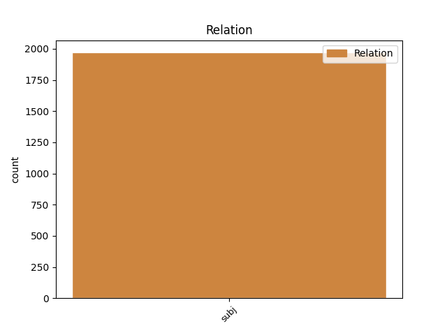
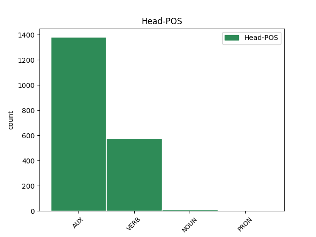
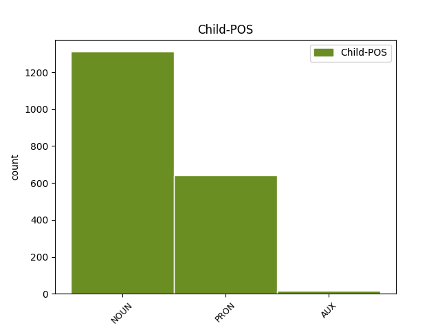

Distribution of features within this leaf



Agreement Rules sorted by frequency.
- When the dependent token is the subject(subj) of the head token, and the head token is AUX and the dependent token is NOUN.
1 2016 _ _ _ _ 0 _ _ _
2 թվականի _ _ _ _ 0 _ _ _
3 հունվարին _ _ _ _ 0 _ _ _
4 Մեծ _ _ _ _ 0 _ _ _
5 Սևանի _ _ _ _ 0 _ _ _
6 ծավալը ծավալ NOUN _ Animacy=Nhum|Case=Nom|Definite=Def|Number=Sing 8 subj _ LTranslit=çaval|Translit=çavalë
7 կազմել _ _ _ _ 0 _ _ _
8 էր եմ AUX _ Aspect=Imp|Mood=Ind|Number=Sing|Person=3|Polarity=Pos|Tense=Imp|VerbForm=Fin 0 _ _ _
9 23,83 _ _ _ _ 0 _ _ _
10 մլրդ _ _ _ _ 0 _ _ _
11 խմ _ _ _ _ 0 _ _ _
12 , _ _ _ _ 0 _ _ _
13 իսկ _ _ _ _ 0 _ _ _
14 Փոքր _ _ _ _ 0 _ _ _
15 Սևանինը _ _ _ _ 0 _ _ _
16 ` _ _ _ _ 0 _ _ _
17 13,99 _ _ _ _ 0 _ _ _
18 մլրդ _ _ _ _ 0 _ _ _
19 : _ _ _ _ 0 _ _ _
1 2017 _ _ _ _ 0 _ _ _
2 թվականի _ _ _ _ 0 _ _ _
3 հունվարին _ _ _ _ 0 _ _ _
4 Արփա _ _ _ _ 0 _ _ _
5 - _ _ _ _ 0 _ _ _
6 Սևան _ _ _ _ 0 _ _ _
7 ջրատարով _ _ _ _ 0 _ _ _
8 Սևանա _ _ _ _ 0 _ _ _
9 լիճ _ _ _ _ 0 _ _ _
10 մուտք _ _ _ _ 0 _ _ _
11 գործած _ _ _ _ 0 _ _ _
12 ջրի _ _ _ _ 0 _ _ _
13 ծավալը _ _ _ _ 0 _ _ _
14 ( _ _ _ _ 0 _ _ _
15 ներառյալ _ _ _ _ 0 _ _ _
16 ջրատարի _ _ _ _ 0 _ _ _
17 հատվածքով _ _ _ _ 0 _ _ _
18 ստորերկրյա _ _ _ _ 0 _ _ _
19 ներհոսքը _ _ _ _ 0 _ _ _
20 ) _ _ _ _ 0 _ _ _
21 կազմել _ _ _ _ 0 _ _ _
22 է _ _ _ _ 0 _ _ _
23 2 _ _ _ _ 0 _ _ _
24 մլրդ _ _ _ _ 0 _ _ _
25 630 _ _ _ _ 0 _ _ _
26 մլն _ _ _ _ 0 _ _ _
27 խմ _ _ _ _ 0 _ _ _
28 , _ _ _ _ 0 _ _ _
29 իսկ _ _ _ _ 0 _ _ _
30 2016 _ _ _ _ 0 _ _ _
31 թվականի _ _ _ _ 0 _ _ _
32 հունվարին _ _ _ _ 0 _ _ _
33 այն այն PRON _ Distance=Dist|Number=Sing|PronType=Dem 35 subj _ LTranslit=ayn|Translit=ayn
34 կազմել _ _ _ _ 0 _ _ _
35 էր եմ AUX _ Aspect=Imp|Mood=Ind|Number=Sing|Person=3|Polarity=Pos|Tense=Imp|VerbForm=Fin 0 _ _ _
36 2 _ _ _ _ 0 _ _ _
37 մլրդ _ _ _ _ 0 _ _ _
38 471 _ _ _ _ 0 _ _ _
39 մլն _ _ _ _ 0 _ _ _
40 խմ _ _ _ _ 0 _ _ _
41 : _ _ _ _ 0 _ _ _
1 Մարզերում _ _ _ _ 0 _ _ _
2 ՀՀԿ _ _ _ _ 0 _ _ _
3 օդիոզ _ _ _ _ 0 _ _ _
4 անդամների _ _ _ _ 0 _ _ _
5 ու _ _ _ _ 0 _ _ _
6 ընդդիմության _ _ _ _ 0 _ _ _
7 պարտությունը պարտություն NOUN _ Animacy=Nhum|Case=Nom|Definite=Def|Number=Sing 9 subj _ LTranslit=partowt’yown|Translit=partowt’yownë
8 ձեռնտու _ _ _ _ 0 _ _ _
9 կլինի լինել VERB _ Aspect=Prosp|Mood=Cnd|Number=Sing|Person=3|Polarity=Pos|Subcat=Intr|Tense=Pres|VerbForm=Fin|Voice=Mid 0 _ _ _
10 ինչպես _ _ _ _ 0 _ _ _
11 Կարեն _ _ _ _ 0 _ _ _
12 Կարապետյանի _ _ _ _ 0 _ _ _
13 թիմին _ _ _ _ 0 _ _ _
14 , _ _ _ _ 0 _ _ _
15 այնպես _ _ _ _ 0 _ _ _
16 էլ _ _ _ _ 0 _ _ _
17 Սերժ _ _ _ _ 0 _ _ _
18 Սարգսյանի _ _ _ _ 0 _ _ _
19 « _ _ _ _ 0 _ _ _
20 երիտասարդ _ _ _ _ 0 _ _ _
21 տեխնոկրատներին _ _ _ _ 0 _ _ _
22 » _ _ _ _ 0 _ _ _
23 : _ _ _ _ 0 _ _ _
1 Այդ _ _ _ _ 0 _ _ _
2 մեթոդների _ _ _ _ 0 _ _ _
3 դեմ _ _ _ _ 0 _ _ _
4 են _ _ _ _ 0 _ _ _
5 դրվել _ _ _ _ 0 _ _ _
6 ժամանակակից _ _ _ _ 0 _ _ _
7 քաղտեխնոլոգիաները _ _ _ _ 0 _ _ _
8 , _ _ _ _ 0 _ _ _
9 և _ _ _ _ 0 _ _ _
10 կհաղթի հաղթել VERB _ Aspect=Prosp|Mood=Cnd|Number=Sing|Person=3|Polarity=Pos|Subcat=Tran|Tense=Pres|VerbForm=Fin|Voice=Act 0 _ _ _
11 նա նա PRON _ Case=Nom|Number=Sing|Person=3|PronType=Prs 10 subj _ LTranslit=na|SpaceAfter=No|Translit=na
12 , _ _ _ _ 0 _ _ _
13 ով _ _ _ _ 0 _ _ _
14 գումար _ _ _ _ 0 _ _ _
15 չի _ _ _ _ 0 _ _ _
16 խնայի _ _ _ _ 0 _ _ _
17 : _ _ _ _ 0 _ _ _
1 Ճիշտ _ _ _ _ 0 _ _ _
2 է եմ AUX _ Aspect=Imp|Mood=Ind|Number=Sing|Person=3|Polarity=Pos|Tense=Pres|VerbForm=Fin 0 _ _ _
3 , _ _ _ _ 0 _ _ _
4 հերոսություն _ _ _ _ 0 _ _ _
5 անելը _ _ _ _ 0 _ _ _
6 նրանց _ _ _ _ 0 _ _ _
7 ` _ _ _ _ 0 _ _ _
8 զինվորների _ _ _ _ 0 _ _ _
9 , _ _ _ _ 0 _ _ _
10 նաև _ _ _ _ 0 _ _ _
11 առաքելությունն _ _ _ _ 0 _ _ _
12 է եմ AUX _ Aspect=Imp|Mood=Ind|Number=Sing|Person=3|Polarity=Pos|Tense=Pres|VerbForm=Fin 2 subj _ LTranslit=em|SpaceAfter=No|Translit=ē
13 : _ _ _ _ 0 _ _ _
1 Ես _ _ _ _ 0 _ _ _
2 օղին _ _ _ _ 0 _ _ _
3 եմ _ _ _ _ 0 _ _ _
4 , _ _ _ _ 0 _ _ _
5 ես _ _ _ _ 0 _ _ _
6 սիգարետն _ _ _ _ 0 _ _ _
7 եմ _ _ _ _ 0 _ _ _
8 , _ _ _ _ 0 _ _ _
9 ես _ _ _ _ 0 _ _ _
10 մորֆին _ _ _ _ 0 _ _ _
11 ու _ _ _ _ 0 _ _ _
12 կոկայինը _ _ _ _ 0 _ _ _
13 , _ _ _ _ 0 _ _ _
14 ես ես PRON _ Case=Nom|Number=Sing|Person=1|PronType=Prs 15 subj _ LTranslit=es|Translit=es
15 թղթախաղը թղթախաղ NOUN _ Animacy=Nhum|Case=Nom|Definite=Def|Number=Sing 0 _ _ _
16 , _ _ _ _ 0 _ _ _
17 ես _ _ _ _ 0 _ _ _
18 , _ _ _ _ 0 _ _ _
19 շշշը _ _ _ _ 0 _ _ _
20 ՜ _ _ _ _ 0 _ _ _
21 , _ _ _ _ 0 _ _ _
22 ես _ _ _ _ 0 _ _ _
23 սսեքսսն _ _ _ _ 0 _ _ _
24 եմ _ _ _ _ 0 _ _ _
25 ... _ _ _ _ 0 _ _ _
1 Էն _ _ _ _ 0 _ _ _
2 ժամանակ _ _ _ _ 0 _ _ _
3 հեշտ _ _ _ _ 0 _ _ _
4 էր _ _ _ _ 0 _ _ _
5 , _ _ _ _ 0 _ _ _
6 ոչ _ _ _ _ 0 _ _ _
7 մի _ _ _ _ 0 _ _ _
8 կասկած _ _ _ _ 0 _ _ _
9 ու _ _ _ _ 0 _ _ _
10 վախ _ _ _ _ 0 _ _ _
11 չկար _ _ _ _ 0 _ _ _
12 . _ _ _ _ 0 _ _ _
13 բոլորը _ _ _ _ 0 _ _ _
14 գիտեին _ _ _ _ 0 _ _ _
15 , _ _ _ _ 0 _ _ _
16 բոլորն _ _ _ _ 0 _ _ _
17 էլ _ _ _ _ 0 _ _ _
18 տեսնում _ _ _ _ 0 _ _ _
19 էին _ _ _ _ 0 _ _ _
20 , _ _ _ _ 0 _ _ _
21 որ _ _ _ _ 0 _ _ _
22 էդ _ _ _ _ 0 _ _ _
23 թերհասը _ _ _ _ 0 _ _ _
24 երեխա _ _ _ _ 0 _ _ _
25 պահող _ _ _ _ 0 _ _ _
26 չի _ _ _ _ 0 _ _ _
27 , _ _ _ _ 0 _ _ _
28 հերն հայր NOUN _ Animacy=Hum|Case=Nom|Definite=Def|Number=Sing|Style=Coll 33 subj _ LTranslit=hayr|Translit=hern
29 էլ _ _ _ _ 0 _ _ _
30 ծերացող _ _ _ _ 0 _ _ _
31 , _ _ _ _ 0 _ _ _
32 մենակ _ _ _ _ 0 _ _ _
33 տղամարդ տղամարդ NOUN _ Animacy=Hum|Case=Nom|Definite=Ind|Number=Sing 0 _ _ _
34 ... _ _ _ _ 0 _ _ _
1 Պարզվեց պարզվել VERB _ Aspect=Perf|Mood=Ind|Number=Sing|Person=3|Polarity=Pos|Subcat=Intr|Tense=Past|VerbForm=Fin|Voice=Mid 0 _ _ _
2 ՝ _ _ _ _ 0 _ _ _
3 թուրք _ _ _ _ 0 _ _ _
4 էր եմ AUX _ Aspect=Imp|Mood=Ind|Number=Sing|Person=3|Polarity=Pos|Tense=Imp|VerbForm=Fin 1 subj _ LTranslit=em|SpaceAfter=No|Translit=ēr
5 ։ _ _ _ _ 0 _ _ _
Disagree Examples:
1 Եդեմն եդեմ NOUN _ Animacy=Nhum|Case=Nom|Definite=Def|Number=Coll 4 subj _ LTranslit=edem|Translit=Edemn
2 այլ _ _ _ _ 0 _ _ _
3 մոլորակ _ _ _ _ 0 _ _ _
4 էր եմ AUX _ Aspect=Imp|Mood=Ind|Number=Sing|Person=3|Polarity=Pos|Tense=Imp|VerbForm=Fin 0 _ _ _
5 , _ _ _ _ 0 _ _ _
6 աքսորավայրը _ _ _ _ 0 _ _ _
7 ՝ _ _ _ _ 0 _ _ _
8 այլ _ _ _ _ 0 _ _ _
9 , _ _ _ _ 0 _ _ _
10 այսինքն _ _ _ _ 0 _ _ _
11 ՝ _ _ _ _ 0 _ _ _
12 այս _ _ _ _ 0 _ _ _
13 , _ _ _ _ 0 _ _ _
14 ուր _ _ _ _ 0 _ _ _
15 այժմ _ _ _ _ 0 _ _ _
16 էլ _ _ _ _ 0 _ _ _
17 բնակվում _ _ _ _ 0 _ _ _
18 ենք _ _ _ _ 0 _ _ _
19 , _ _ _ _ 0 _ _ _
20 բայց _ _ _ _ 0 _ _ _
21 միշտ _ _ _ _ 0 _ _ _
22 նայում _ _ _ _ 0 _ _ _
23 ենք _ _ _ _ 0 _ _ _
24 երկինք _ _ _ _ 0 _ _ _
25 ՝ _ _ _ _ 0 _ _ _
26 բնազդում _ _ _ _ 0 _ _ _
27 դրոշմված _ _ _ _ 0 _ _ _
28 հիշողությամբ _ _ _ _ 0 _ _ _
29 Եդեմը _ _ _ _ 0 _ _ _
30 որոնելով _ _ _ _ 0 _ _ _
31 ։ _ _ _ _ 0 _ _ _
1 Մի _ _ _ _ 0 _ _ _
2 խոսքով _ _ _ _ 0 _ _ _
3 ՝ _ _ _ _ 0 _ _ _
4 մենք _ _ _ _ 0 _ _ _
5 դրա _ _ _ _ 0 _ _ _
6 հետ _ _ _ _ 0 _ _ _
7 էլ _ _ _ _ 0 _ _ _
8 գործ _ _ _ _ 0 _ _ _
9 չունենք _ _ _ _ 0 _ _ _
10 , _ _ _ _ 0 _ _ _
11 մերը _ _ _ _ 0 _ _ _
12 չէ _ _ _ _ 0 _ _ _
13 այլևս _ _ _ _ 0 _ _ _
14 , _ _ _ _ 0 _ _ _
15 մերը մեր PRON _ Case=Nom|Definite=Def|Number=Plur|Person=1|Poss=Yes|PronType=Prs 17 subj _ LTranslit=mer|Translit=merë
16 սա _ _ _ _ 0 _ _ _
17 է եմ AUX _ Aspect=Imp|Mood=Ind|Number=Sing|Person=3|Polarity=Pos|Tense=Pres|VerbForm=Fin 0 _ _ _
18 ՝ _ _ _ _ 0 _ _ _
19 դժոխքը _ _ _ _ 0 _ _ _
20 , _ _ _ _ 0 _ _ _
21 որը _ _ _ _ 0 _ _ _
22 , _ _ _ _ 0 _ _ _
23 սակայն _ _ _ _ 0 _ _ _
24 , _ _ _ _ 0 _ _ _
25 հասցրել _ _ _ _ 0 _ _ _
26 ենք _ _ _ _ 0 _ _ _
27 սիրել _ _ _ _ 0 _ _ _
28 . _ _ _ _ 0 _ _ _
29 դեհ _ _ _ _ 0 _ _ _
30 , _ _ _ _ 0 _ _ _
31 շանը _ _ _ _ 0 _ _ _
32 որտեղ _ _ _ _ 0 _ _ _
33 էլ _ _ _ _ 0 _ _ _
34 կապես _ _ _ _ 0 _ _ _
35 , _ _ _ _ 0 _ _ _
36 կապվում _ _ _ _ 0 _ _ _
37 - _ _ _ _ 0 _ _ _
38 ընտելանում _ _ _ _ 0 _ _ _
39 - _ _ _ _ 0 _ _ _
40 սիրում _ _ _ _ 0 _ _ _
41 է _ _ _ _ 0 _ _ _
42 ։ _ _ _ _ 0 _ _ _
1 Մի _ _ _ _ 0 _ _ _
2 խոսքով _ _ _ _ 0 _ _ _
3 ՝ _ _ _ _ 0 _ _ _
4 մենք _ _ _ _ 0 _ _ _
5 դրա _ _ _ _ 0 _ _ _
6 հետ _ _ _ _ 0 _ _ _
7 էլ _ _ _ _ 0 _ _ _
8 գործ _ _ _ _ 0 _ _ _
9 չունենք _ _ _ _ 0 _ _ _
10 , _ _ _ _ 0 _ _ _
11 մերը _ _ _ _ 0 _ _ _
12 չէ _ _ _ _ 0 _ _ _
13 այլևս _ _ _ _ 0 _ _ _
14 , _ _ _ _ 0 _ _ _
15 մերը _ _ _ _ 0 _ _ _
16 սա _ _ _ _ 0 _ _ _
17 է _ _ _ _ 0 _ _ _
18 ՝ _ _ _ _ 0 _ _ _
19 դժոխքը _ _ _ _ 0 _ _ _
20 , _ _ _ _ 0 _ _ _
21 որը որ PRON _ Case=Nom|Definite=Def|Number=Sing|PronType=Rel 26 subj _ LTranslit=or|SpaceAfter=No|Translit=orë
22 , _ _ _ _ 0 _ _ _
23 սակայն _ _ _ _ 0 _ _ _
24 , _ _ _ _ 0 _ _ _
25 հասցրել _ _ _ _ 0 _ _ _
26 ենք եմ AUX _ Aspect=Imp|Mood=Ind|Number=Plur|Person=3|Polarity=Pos|Tense=Pres|VerbForm=Fin 0 _ _ _
27 սիրել _ _ _ _ 0 _ _ _
28 . _ _ _ _ 0 _ _ _
29 դեհ _ _ _ _ 0 _ _ _
30 , _ _ _ _ 0 _ _ _
31 շանը _ _ _ _ 0 _ _ _
32 որտեղ _ _ _ _ 0 _ _ _
33 էլ _ _ _ _ 0 _ _ _
34 կապես _ _ _ _ 0 _ _ _
35 , _ _ _ _ 0 _ _ _
36 կապվում _ _ _ _ 0 _ _ _
37 - _ _ _ _ 0 _ _ _
38 ընտելանում _ _ _ _ 0 _ _ _
39 - _ _ _ _ 0 _ _ _
40 սիրում _ _ _ _ 0 _ _ _
41 է _ _ _ _ 0 _ _ _
42 ։ _ _ _ _ 0 _ _ _
1 Ի _ _ _ _ 0 _ _ _
2 սկզբանե _ _ _ _ 0 _ _ _
3 մեր _ _ _ _ 0 _ _ _
4 ուշքումիտքն ուշքումիտք NOUN _ Animacy=Nhum|Case=Nom|Definite=Def|Number=Coll 6 subj _ LTranslit=owšk’owmitk’|Translit=owšk’owmitk’n
5 ինքնապահպանումն _ _ _ _ 0 _ _ _
6 էր եմ AUX _ Aspect=Imp|Mood=Ind|Number=Sing|Person=3|Polarity=Pos|Tense=Imp|VerbForm=Fin 0 _ _ _
7 , _ _ _ _ 0 _ _ _
8 ստամոքսը _ _ _ _ 0 _ _ _
9 լցնելը _ _ _ _ 0 _ _ _
10 , _ _ _ _ 0 _ _ _
11 էդ _ _ _ _ 0 _ _ _
12 հետո _ _ _ _ 0 _ _ _
13 , _ _ _ _ 0 _ _ _
14 երբ _ _ _ _ 0 _ _ _
15 անտառից _ _ _ _ 0 _ _ _
16 փախանք _ _ _ _ 0 _ _ _
17 , _ _ _ _ 0 _ _ _
18 քաղաքակրթություն _ _ _ _ 0 _ _ _
19 ստեղծեցինք _ _ _ _ 0 _ _ _
20 , _ _ _ _ 0 _ _ _
21 ազատ _ _ _ _ 0 _ _ _
22 ու _ _ _ _ 0 _ _ _
23 համեմատաբար _ _ _ _ 0 _ _ _
24 անվտանգ _ _ _ _ 0 _ _ _
25 ժամանակ _ _ _ _ 0 _ _ _
26 ունեցանք _ _ _ _ 0 _ _ _
27 ուրիշ _ _ _ _ 0 _ _ _
28 , _ _ _ _ 0 _ _ _
29 անտագնապ _ _ _ _ 0 _ _ _
30 աչքով _ _ _ _ 0 _ _ _
31 մեր _ _ _ _ 0 _ _ _
32 շուրջը _ _ _ _ 0 _ _ _
33 նայելու _ _ _ _ 0 _ _ _
34 : _ _ _ _ 0 _ _ _
1 Ես _ _ _ _ 0 _ _ _
2 օղին _ _ _ _ 0 _ _ _
3 եմ _ _ _ _ 0 _ _ _
4 , _ _ _ _ 0 _ _ _
5 ես _ _ _ _ 0 _ _ _
6 սիգարետն _ _ _ _ 0 _ _ _
7 եմ _ _ _ _ 0 _ _ _
8 , _ _ _ _ 0 _ _ _
9 ես ես PRON _ Case=Nom|Number=Sing|Person=1|PronType=Prs 10 subj _ LTranslit=es|Translit=es
10 մորֆին մորֆի NOUN _ Animacy=Nhum|Case=Nom|Definite=Def|Number=Coll|Style=Coll 0 _ _ _
11 ու _ _ _ _ 0 _ _ _
12 կոկայինը _ _ _ _ 0 _ _ _
13 , _ _ _ _ 0 _ _ _
14 ես _ _ _ _ 0 _ _ _
15 թղթախաղը _ _ _ _ 0 _ _ _
16 , _ _ _ _ 0 _ _ _
17 ես _ _ _ _ 0 _ _ _
18 , _ _ _ _ 0 _ _ _
19 շշշը _ _ _ _ 0 _ _ _
20 ՜ _ _ _ _ 0 _ _ _
21 , _ _ _ _ 0 _ _ _
22 ես _ _ _ _ 0 _ _ _
23 սսեքսսն _ _ _ _ 0 _ _ _
24 եմ _ _ _ _ 0 _ _ _
25 ... _ _ _ _ 0 _ _ _